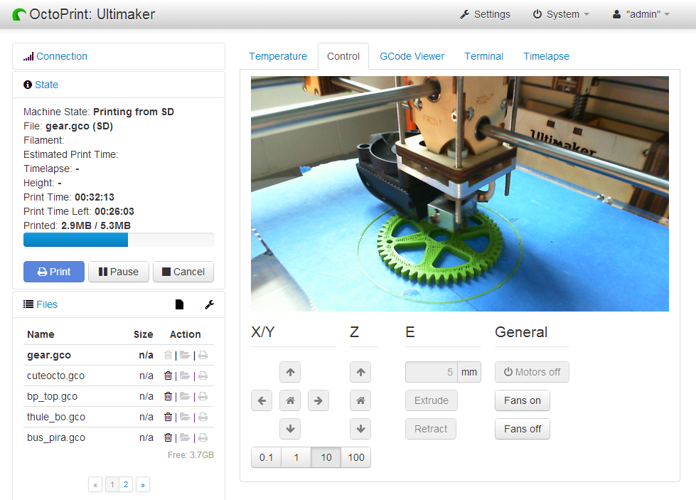
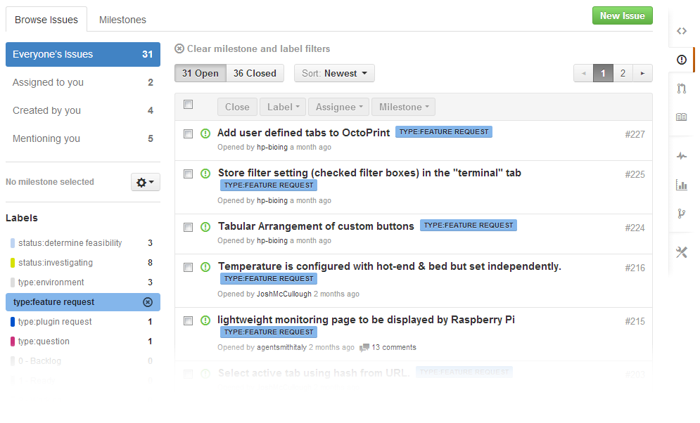

OctoPrint
3D printing unchained

Created by Gina Häußge / @foosel
Who am I?
- Software engineer by day
- Passionate code monkey by night
- Proud owner of a 3D printer since late November 2012
- Developer of OctoPrint since Christmas 2012 (that's what holidays are for, right?)
Why another host software?
The Problem
- PLA/ABS/yourFavoritePolymer fumes
- Stepper motors can produce quite the racket
- Takes up a lot of space in the office (printer, cable salad, ...)
- Takes up the office computer (or the laptop)
The Solution
Just put the printer somewhere it doesn't disturb anyone, like the shed, the basement or a spare bathroom.
But actually watching it print is so mesmerizing and calming, and I also want to make sure nothing goes wrong!
And thus the idea of OctoPrint was born!

What was the vision?
Run on a Wifi-enabled Raspberry Pi
So I can just put it somewhere within my Wifi's range and be able to access it without spending too much money on this convenience.

Provide feedback regarding the current printer state (temperature, print job, etc)
So I can always be sure that it's doing what it's supposed to be doing.
Include a webcam feed
So I can still watch the printer do its magic.
And do all that in the browser!
So that I can quickly check up on it from any of my devices without the need to install anything.
What's in the package?
- Uploading and managing GCODE files on the host or the SD card
- Printing GCODE files stored on the host or the SD, pausing and cancelling running print jobs
- Monitoring the current progress, temperature and printer communication and visualizing the object being printed
- Watching the print via the integrated webcam feed and creating timelapse movies of the prints
- Remote controlling the printer functions
- Customizing the available controls
- Getting notifications and triggering actions based on certain events, like a print being done
- Access control and user management so that you can make your printer accessible over the internet (also great for shared printers e.g. in hackerspaces)
All this in a responsive web interface using modern web technologies that ensure an experience just like on the desktop.

Demo time!
What's to come?
- Slicing STL files to GCODE (using Cura SteamEngine, big kudos to +Ross Hendrickson)
- An interface optimized for mobile devices
- Plugin system for adding more specialized functionality to the core application
Google Glass integration
 (big kudos to +Adam Bryam)
(big kudos to +Adam Bryam)
... and much more
Patches welcome! :)
Want to try it?
With OctoPi there's a dedicated distribution for the Raspberry Pi, created by +Guy Sheffer:
Or you can always install from source:
Questions?
Website:
octoprint.org
Github (Source, Bugtracker, Wiki):
github.com/foosel/OctoPrint
Backup
What you can do with events...
Automatically upload timelapses to Youtube
events:
systemCommandTrigger:
- event: MovieDone
command: 'youtube-upload --email="<yourUser>"
--password="<yourPassword>"
--title="Timelapse: %(filename)s"
--description="Timelapse of %(filename)s, printed and recorded
via OctoPrint"
--category="Tech"
--keywords=OctoPrint "%(data)s"'
(Using youtube-upload)
Push notifications for Android and iOS
- event: PrintDone
command: curl -s
-F "token=<yourApiToken>"
-F "user=<yourUserToken>"
-F "message=Completed %(filename)s"
-F "title=OctoPrint"
https://api.pushover.net/1/messages.json
(Using Pushover)
Send a notification to Pebble
- event: PrintDone
command: curl -s
-F "userId=<yourUserId>"
-F "userToken=<yourUserToken>"
-F "title=OctoPrint"
-F "body=Print of %(filename)s completed"
-F "type=notification"
https://ofkorth.net/pebble/send
(Using Pebble Connect with httpebble)
Under the hood
- Written in Python (2.7) and loads of Javascript
- Communication to the backend via AJAX and Sock.js
- REST API is a work in progress